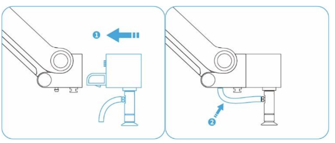
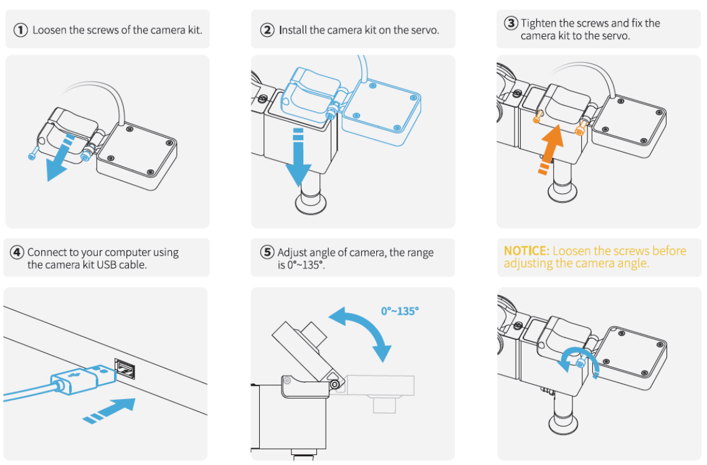
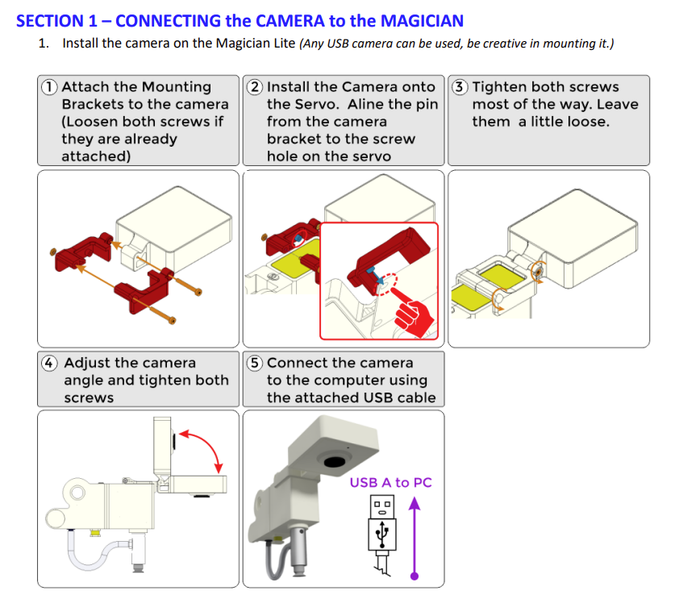

Articulated robots - Lab 3
Object Detection, Classification, and Sorting
Instructor: Prof. Sangram Redkar
Authors:
- Sai Srinivas Tatwik Meesala: smeesala@asu.edu
- Rajesh S Aouti: raouti@asu.edu
Duration: 2 hours
Robot: Dobot Magician Lite
Deliverables
- Lab Report
- Write in IEEE/IJRR format.
- Include:
- Problem statement/mission
- Procedure with detailed steps in a paragraph
- Results with annotated figures and tables
- Reflection and lessons learned
- Conclusion
- Serial number of the robot used (find under the robot when turned off)
- Add a proper title page, page numbers, and references.
- Use the IJRA template: https://iaescore.com/gfa/ijra.docx?utm_source.
- Reports must be publication-ready in clarity and formatting.
- Python Source Files
- Submit all `.py` scripts developed.
- Ensure code is commented and organized.
- Demonstration Video
- Record a clear video showing successful task execution.
- Ensure the video is professional, public, and well-presented.
- Include visual cues or graphics to highlight key steps.
- Clearly state the objective of the problem being solved.
- Upload to YouTube or LinkedIn and provide a shareable link in your submission.
- The video audience may or may not have technical expertise.
- Tag ASU, your professor, and the teaching staff.
- Lab Check-Off
- After running your implementation, show it live to the teaching staff.
- No grade will be assigned without in-person verification.
- You will only get 2 chances to get a live demo check-off
**You may combine Lab 3 and 4 together in the report.**
Preparations before class
- Operating System: Ubuntu 22.04 (and above, depending on the laptop), and all drivers, including the GPU. Get familiar with Ubuntu.
- Software Installation:
- Install pydobot2 and YOLO.
- pip install pydobot2 ultralytics
- Weight File (If required, asu email only) : https://drive.google.com/file/d/19ugnc1EfGttuvBZDVt8N-5mptPxCSO9q/view?usp=sharing
- And other packages that you may require for the lab.
- Install camera utilities:
- sudo apt update
- sudo apt install v4l-utils ffmpeg cheese
- Confirm camera port:
- v4l2-ctl --list-devices
- Cheese
- Make sure you have permission to access your port.
- Permissions
- Ensure user has access to /dev/video* and /dev/ttyUSB*.
- Add user to the dialout group if necessary:
- sudo usermod -a -G dialout $USER
- Read the entire document before coming to the lab.
- Verify all dependencies are installed.
- Get familiar with all the packages you have installed. Write an example code for yourself to test it on the robot. You may not have time to play around in the lab.
- Before coming to the lab, test the code with your webcam.
- Robot Connection
- Identify COM port:
- ls /dev/tty*
- Note down the correct /dev/ttyUSB* path for later use.
Introduction
This laboratory exercise focuses on integrating computer vision with robotic manipulation to perform an autonomous palletizing task. Students will use the Dobot Magician Lite robot, equipped with a suction cup gripper and an external camera, to detect, classify, and sort objects. The core challenge is to combine real-time object detection with precise robotic motion control for reliable manipulation.
Objectives:
- Apply computer vision for real-time object detection.
- Control the Dobot Magician Lite with pydobot2.
- Use YOLO to identify and classify objects.
- Perform palletizing tasks by placing objects into designated boxes.
Core Concept:
The robot must autonomously perform the following sequence:
- Detects an object below the end-effector using the camera.
- Classify the object using YOLOv5 (e.g., food vs. vehicle).
- Pick up the object using the suction cup gripper.
- Place the object in the correct pallet according to its class.
- Return to the HOME position and repeat the cycle.
Preparations
- System Update
sudo apt update |
- Install Camera Tools
sudo apt install v4l-utils ffmpeg cheese |
- Verify Camera Connection
- List devices:
v4l2-ctl --list-devices |
- Test video stream:
Cheese |
- Robot Port Identification
- Check available serial ports:
ls /dev/tty* |
- Note down the port for the Dobot (e.g., /dev/ttyUSB0).
- Libraries and Documentation
- pydobot2 reference: https://pypi.org/project/pydobot2/
- YOLOv5 reference: https://docs.ultralytics.com/
- Print the following and check the instructions in the document
- https://docs.google.com/document/d/1Z5A9RDu8Kce4EOLDCaPF9BqytFWKYY8MiuGSDeCtfZc/edit?usp=sharing
Using Python
After the above preparations are completed, the manipulation of the robotic arm can be implemented. First, open the installed PyCharm/VS Code/Jupyter NB, create a new Python file, and import the library by entering the following code:
Go through all Python commands: https://pypi.org/project/pydobot2/
from pydobot.Dobot import MODE_PTP
import pydobot
device = pydobot.Dobot(port="/dev/tty")
# device = pydobot.Dobot(port="/dev/tty.usbserial-XXXX")
device.home() # Home the robot to the origin position
(pose, joint) = device.get_pose() # Get the current position and joint angles
print(f"pose: {pose}, j: {joint}")
[x, y, z, r] = pose
[j1, j2, j3, j4] = joint
# position, joint = pose.position, pose.joints
print(pose)
device.speed(1000, 1000)
# Preferred way to move
device.move_to(mode=int(MODE_PTP.MOVJ_XYZ), x=230, y=30.0, z=20, r=0.0) # Move to position (x=250, y=0, z=50) with r=0
device.move_to(mode=int(MODE_PTP.MOVJ_ANGLE), x=20, y=0.0, z=50, r=0.0) # Move to joint angles (j1=0, j2=0, j3=0, j4=0)
# Control gripper and suction cup
device.suck(True) # Turn on the suction cup
device.suck(False) # Turn off the suction cup
device.close()
# Advanced way to move
device.move_to(mode=int(MODE_PTP.JUMP_XYZ), x=230, y=30.0, z=20, r=0.0) # Lift and move to position (x=250, y=0, z=50) with r=0
device.move_to(mode=int(MODE_PTP.JUMP_ANGLE), x=20, y=30.0, z=20, r=0.0) # Lift and move to joint angles (j1=0, j2=0, j3=0, j4=0)
# Move by relative amounts
device.move_to(mode=int(MODE_PTP.MOVJ_INC), x=-10, y=-10.0, z=-10, r=0.0) # Move relative to current angles by (dj1=-10, dj2=-10, dj3=-10, dj4=0)
device.move_to(mode=int(MODE_PTP.MOVJ_XYZ_INC), x=10, y=10.0, z=30, r=0.0) # Move relative to current position by (dx=10, dy=10, dz=10) with dr=0
Lab 3:
The objective of this laboratory exercise is to integrate computer vision with robotic manipulation to perform an autonomous palletizing task. A Dobot Magician Lite robot equipped with a suction cup gripper and an external camera is used. The robot must detect objects placed in a defined workspace using YOLO-based real-time object detection, classify them into categories (e.g., food vs. vehicle), and sort them into corresponding pallets.
The mission requires the robot to:
- Identify and classify objects beneath the end-effector.
- Pick up each object with the suction cup.
- Place the object in the appropriate pallet according to its class.
- Return to the home position to repeat the cycle.
This task demonstrates the application of perception-driven robotic manipulation, combining real-time detection with precise motion control.
Use of generative AI is permitted only for coding and encouraged.
Mounting and Workspace
- Attach the suction cup

- Attach the camera to the suction-cup end effector.
- The Allen key is stored in a bag inside the cabinet below. The same bag also contains a small screw and a suction cup. Open the bag carefully to avoid losing or damaging any parts.


- Define a clear workspace with two pallets and a fixed pick-up location: A and B. Mark their bin centers in robot coordinates.
- Robot States
- Define named poses: HOME, PICK_UP, PALLET_A_DROP, PALLET_B_DROP.
- Home at the start and between cycles.
Object Recognition
- Example Code YOLO Object Detection:
- https://drive.google.com/file/d/1MupeieE9CzdDPEdeIRC8uP_oINGtrtgB/view?usp=sharing
- Extract the label names based on the images provided.
- As it detects an image below the end effector.
- If food: place it in pallet A.
- If Vehicle: place it in pallet B.
- Come back to the home position and start again.
After you are done, contact the teaching staff for check-off